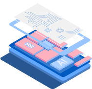
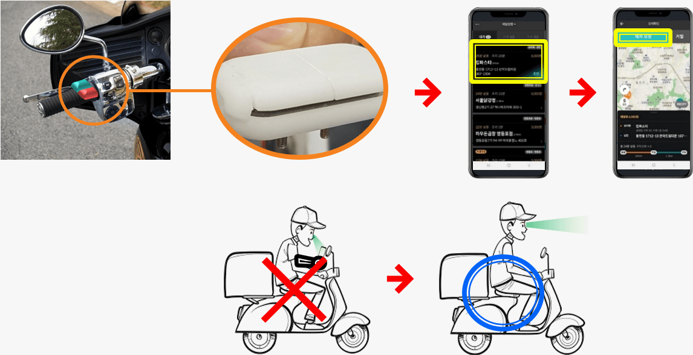
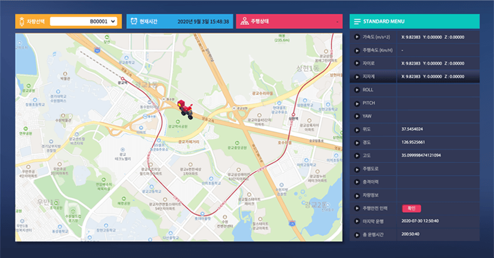

tech
-
경쟁사 전무
세계 최초의 H/W 기반
인슈어테크 플랫폼
-
작고 저렴한 H/W
Dashcam(카메라 블랙박스)에
비해 매우 작고, 저렴함 -
높은 정확도
GPS론 알 수 없는
세세한 움직임 기록 가능
(from VR기술, GPS해상도 15m) -
비카메라방식
사각지대 없음,
조명 불필요 -
동시 처리
AI알고리즘에 의한
실시간 수만대 분석/기록
(사고 후 분쟁 근거) -
실시간 공유
개별 관찰이 가능

-
높은 보험성
높은 보험 할인율
-
실질적 할인
P2P보험,
시간제 보험이 해결할 수 없는
근본 문제 해결
- 적용범위 : 이륜차, 자전거, 킥보드, 세그웨이 등 신규 소형 모빌리티
현재 신규개발 보드(6축-9축 호환 및 스마트폰 조작기능, 카메라 호환기능 탑재) 생산 중에 있음
주행도로 인도, 횡단보도, 차도 주행 등 확인가능, 필요시 추가 역주행 (개발 중) 중앙선을 넘어서 주행하는지 검출 충격이력 충격량, 충격력, 충격방향 GPS 정보 기본정보, 스마트폰을 통해 검출 급가속 및 감속 GPS로는 알 수 없는 짧은 범위의 급감가속 정밀 속도 (개발 중) 센서 값으로 보정한 차량의 정밀한 속도 롤링, 칼치기 이륜차의 난폭운행 중 하나 넘어짐 이륜차의 넘어짐 (충격 후 넘어짐 등을 통해 사고 도출 가능) 신호위반 (개발 중) 신호를 위반하여 주행하는지 검출 기타 위 정보들을 조합하여, 사고기록, 사고 자동 출동, 누적 배달거리 등 다양한 주행의 결론을 얻을 수 있음 - 라이더로그를 통해 얻을 수 있는 정보
GPS 좌표/속도 및 보다 향상된 정밀속도, 정밀 급/가감속 및 주행이력
-
cctv
-
즐겨찾기
-
고속도로/국도
교통지도 -
소통정보
-
vms 정보
-
도시간 소요시간
-
공사사고 정보
-
- 파손관리
넘어짐, 충격량/방향 이력확인
- 불법관리
인도/ 횡단보도 침범(주행도로 확인), 곡예운전, 신호위반, 역주행 (개발중)
- 사고관리
사고 기록 및 사고유형, 충격세기 파악
- 옵션제공 : 라이더 로그 제공
배달대행용 스마트폰 조작기 : 전방주시로 운행 중 안전성 향상

- 소형 모빌리티의 관제 및 운행기록 제공
- 공유 마이크로 모빌리티/배달이륜차의 사고/위법행위 관제.
- 사고/보험분쟁, 단체보험할인 등의 객관적 데이터 확보.
- 웹을 통한 실시간 모니터링.
- 판단 근거마련 후 이용자 평가제공
